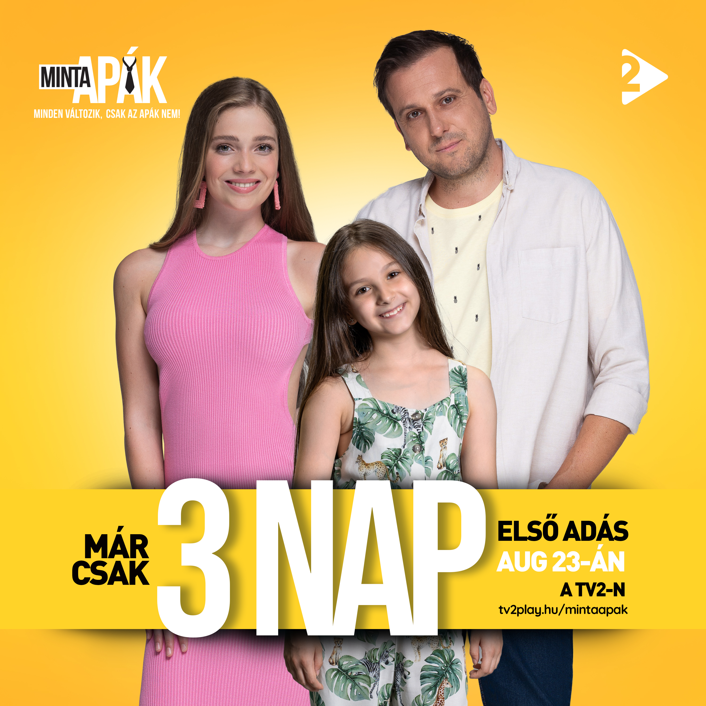
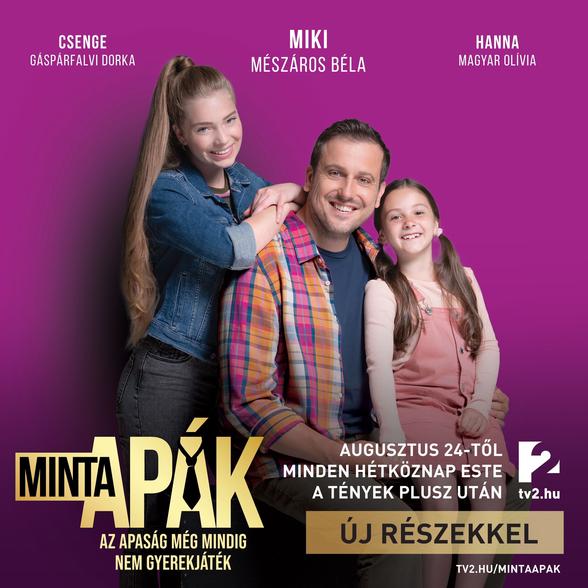

When Small Things Goes BIG
A Talent In Acting
In 2017, following her success on RTL, she was given the opportunity to take part in an image film for one of the largest pharmaceutical companies in Hungary (Richter Gedeon Pharmaceuticals). (Az elismerés minden nőnek jár! - YouTube, Director: Dávid Spáh)
In 2019, she was cast in the lead role of one of the children (Hanna) in the new daily fiction series ’Señores Papis/Dear Daddies dramedy' (Sres. Papis/Dear Daddies) on the leading commercial channel TV2 and runs in prime time.

The series is a Hungarian adaptation of the Slovakian adaptation (Oteckovia) of the Argentinean series Señores Papis. The series mixes comedy and drama to tell the story of the twists and turns of four friendly fathers and their family. Olivia's father in the series is Miki, who is constantly torn between his ex-wife, who is raising their two daughters, and his new wife, who is expecting their youngest heir. As he tries to live up to his old family and his new one, it increasingly seems that neither is succeeding. In this role, Olivia plays a shrewd, cunning little girl who tries to reunite her divorced parents through various tricks. She played the role for three seasons (2019-2021), appearing in 199 episodes. His character has received very positive professional and audience feedback.
In 2021, she participated as a lead character (Elza) in the film (Real siblings) by Kristóf Kiss-Szeif, a graduate of the Budapest Werk Academy of Directing

Also in 2021, she was invited by TV2 to participate in a programme of the gastro-reality 'Game of Chefs GR - child jury', where he acted as a child judge for the competing chefs.

In 2022, she starred in the children's show "Hetedhét Adventures" on the Hungarian public television channel M2 Petőfi, in an episode of a 10-part fairy tale series based on the best stories of a fairy tale writing competition. In the story "Magic Mirror" (written by Emilia Róza Rácz), she played the role of Róza, who finds herself in a mirror realm in another world through a special mirror. Minden este egy mese I Varázstükör - YouTube